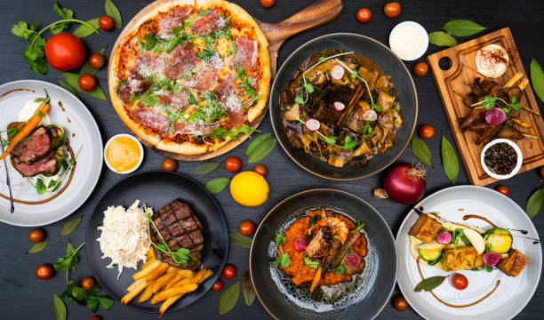
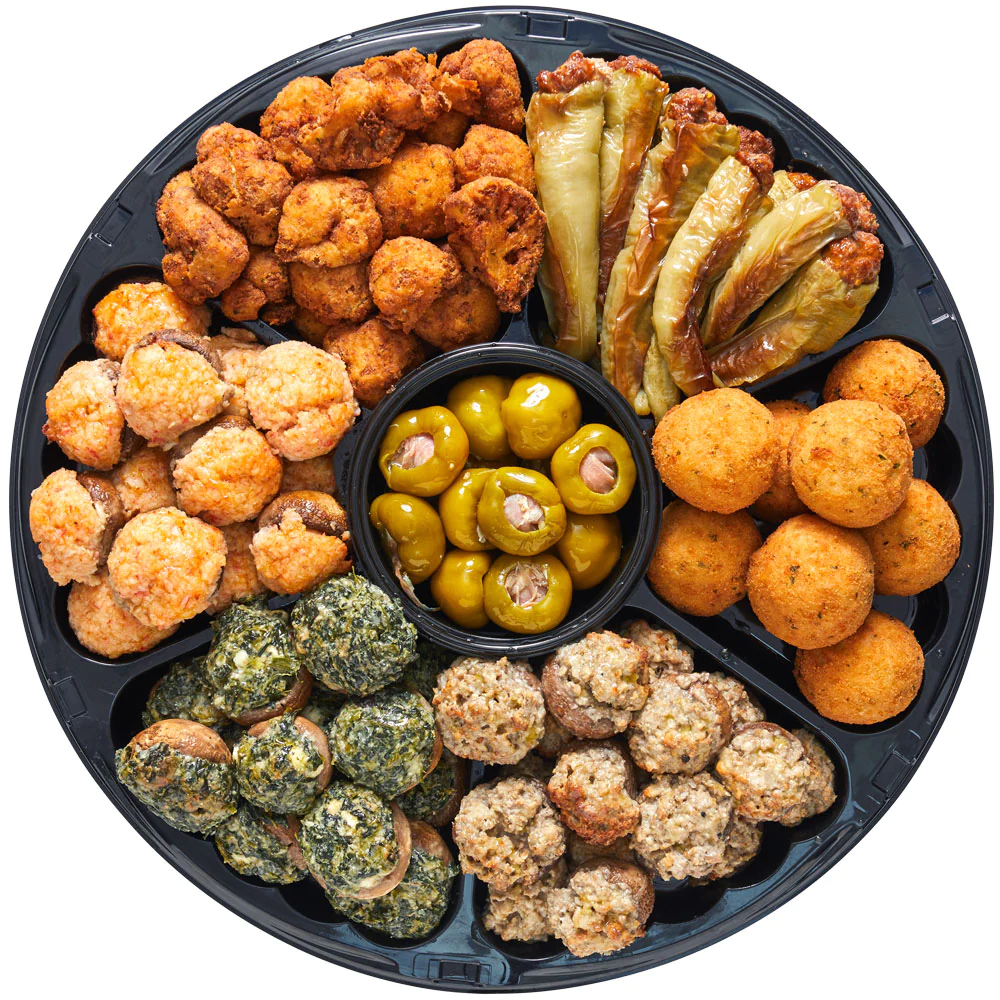

Main Courses
Main courses are the foundation of a healthy and satisfying meal. They provide essential nutrients that our bodies need to function properly and help us stay energized throughout the day. Benefits of Main Courses Provide essential nutrients: Main courses typically contain a variety of nutrients, including protein, carbohydrates, fats, vitamins, and minerals. These nutrients are essential for maintaining good health and preventing chronic diseases. Promote satiety: Main courses help us feel full and satisfied after eating, which can help us control our calorie intake and avoid overeating. Support muscle growth and repair: Protein-rich main courses, such as meat, poultry, fish, and beans, help build and repair muscle tissue. Improve brain function: Certain nutrients found in main courses, such as omega-3 fatty acids, are important for brain health and cognitive function. Boost energy levels: Complex carbohydrates found in main courses, such as whole grains, provide sustained energy throughout the day. Promote digestive health: Fiber-rich main courses, such as vegetables and fruits, help keep our digestive system healthy. Reduce the risk of chronic diseases: Eating a healthy diet that includes plenty of main courses can help reduce the risk of developing chronic diseases such as heart disease, stroke, type 2 diabetes, and certain types of cancer. Importance of Main Courses Main courses are important for a number of reasons. They provide the bulk of our daily nutrients, help us feel full and satisfied, and support our overall health and well-being. When choosing main courses, it is important to select a variety of nutrient-rich options that fit into a healthy eating pattern. Here are some tips for choosing healthy main courses: Choose lean protein sources, such as fish, poultry, and beans. Include plenty of fruits and vegetables. Choose whole grains over refined grains. Limit unhealthy fats, such as saturated and trans fats. Season your food with herbs and spices instead of salt. Cook your food using healthy methods, such as grilling, baking, or roasting. By following these tips, you can make sure that your main courses are nutritious and delicious.
Appetizers
Appetizers, also known as starters or hors d'oeuvres, are small portions of food served before the main course. They play a significant role in enhancing the dining experience and offer a variety of benefits: Enhancing Appetite and Taste Buds: Appetizers serve as a prelude to the main course, stimulating the appetite and preparing the taste buds for the flavors to come. They can also excite the palate and set the tone for the meal. Managing Hunger and Pacing the Meal: Appetizers can help prevent overeating by satisfying initial hunger pangs, allowing you to savor the main course without feeling overly full. They also help pace the meal, creating a more enjoyable dining experience. Introducing New Flavors and Culinary Exploration: Appetizers provide an opportunity to experiment with new flavors and cuisines. They can introduce guests to unique ingredients, preparation techniques, and culinary traditions. Social Interaction and Conversation Catalyst: Appetizers can facilitate social interaction and conversation among guests. Sharing plates and discussing food preferences can create a more engaging and convivial atmosphere. Creative Expression and Culinary Artistry: Appetizers allow chefs to showcase their creativity and culinary artistry, presenting small bites that are both visually appealing and flavorful. Portion Control and Dietary Considerations: Appetizers can be tailored to individual dietary needs and preferences. Smaller portions allow for more variety and flexibility in food choices. Digestive Preparation: Appetizers can stimulate the production of digestive juices, preparing the stomach for the main course and promoting better digestion. Balancing Flavors and Texture Contrast: Appetizers can complement the main course by providing contrasting flavors and textures, creating a more balanced and enjoyable meal. Anticipation and Culinary Excitement: Appetizers build anticipation and excitement for the main course, enhancing the overall dining experience. Setting the Scene and Defining the Meal: Appetizers can set the stage for the meal, hinting at the style, flavors, and culinary influences that will follow.
Desserts

While often perceived as an indulgence, desserts can offer several benefits and play a significant role in a balanced diet: Psychological Satisfaction and Mood Enhancement: Desserts can provide psychological satisfaction and contribute to a positive mood. The sweetness and pleasant flavors can trigger the release of dopamine, a neurotransmitter associated with pleasure and reward. Completing the Dining Experience: Desserts can serve as a satisfying conclusion to a meal, providing a sense of closure and completeness to the dining experience. Celebrating Special Occasions and Traditions: Desserts are often associated with celebrations, holidays, and cultural traditions, adding a touch of joy and festivity to special occasions. Satisfying Cravings and Promoting Moderation: Indulging in occasional desserts can help satisfy cravings and prevent overconsumption of unhealthy sweets in the long run. Nutrient-Rich Options and Dietary Variety: Certain desserts, such as fruit-based or dark chocolate-based ones, can provide essential nutrients and antioxidants. Culinary Creativity and Experimentation: Desserts offer a platform for culinary creativity and experimentation, allowing chefs to showcase their artistry and explore new flavor combinations. Cultural Exchange and Culinary Exploration: Desserts can provide a window into different cultures and cuisines, offering a taste of traditional ingredients and preparation techniques. Sharing and Social Bonding: Sharing desserts can foster social bonding and create a sense of connection and shared enjoyment. Balancing Flavors and Ending the Meal with Sweetness: Desserts can balance out the flavors of a meal, providing a sweet and satisfying finish. Personal Preference and Indulgence: Enjoying desserts in moderation can be a source of personal pleasure and indulgence, enhancing the overall dining experience.